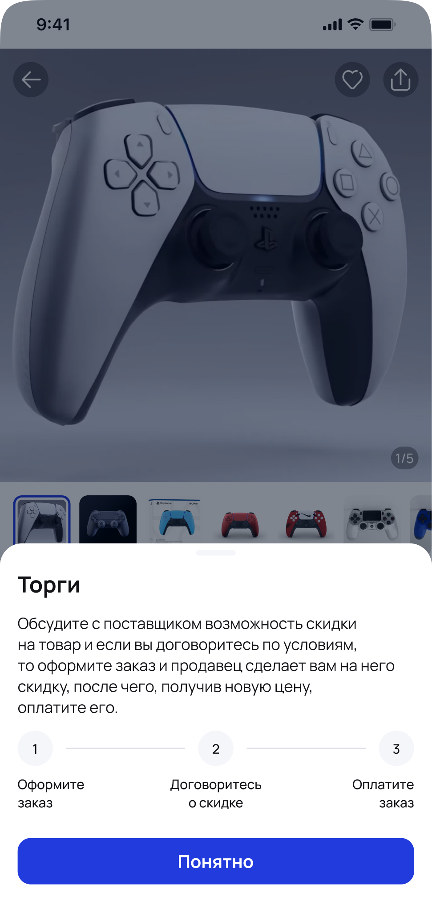
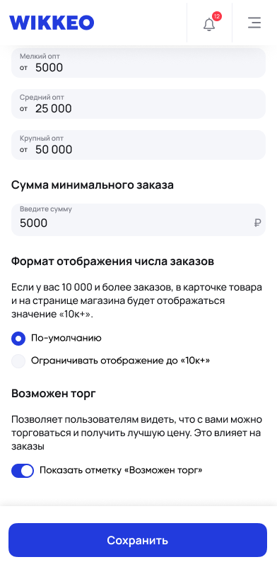

Механика торгов: больше сделок, активнее чаты
Торговаться на площадке было можно, но покупатели об этом не знали. Встроил торг в сценарий заказа — как явное действие, а не как догадку.
- Роль
- Lead Designer
- Период
- 2025 — 2026
- Формат
- Фриланс
- Результат
- 7 000 продаж за месяц


Спрос на торг был, но о нём не догадывались
Опросил покупателей и продавцов через сетку комьюнити-групп площадки. 18 из 24 покупателей ответили, что никогда не думали, что здесь можно торговаться, но готовы попробовать. Чтобы проверить не декларацию, а поведение, попросил их написать нескольким продавцам и попросить скидку: из 10 попытавшихся договорились 7, и опыт им понравился.
Продавцы встретили идею настороженно. Отношение изменилось после того, как стало ясно: процент скидки они определяют сами, а механика работает на объём продаж, а не против маржи.
У всех торг живёт в переписке — и там же теряется
На Авито прямой контакт с продавцом есть, и самые настойчивые покупатели о скидке договариваются, но механики как таковой нет: торг существует только внутри чата и держится на том, догадался покупатель написать или нет.
На китайской 1688 сценарий доведён до конца: покупатель пишет продавцу по товару, они обсуждают цену, продавец соглашается и выставляет новую стоимость, а покупателю приходит уведомление о возможности купить по новому прайсу. Результат договорённости попадает в товар, а не остаётся словами в переписке.
Общее у обоих — вход в торг спрятан в чат. Это и определило, где искать решение: саму договорённость оставить в переписке, а вход в неё вынести туда, где покупатель уже находится.
Подсказок в чате было бы недостаточно
Очевидное решение — подсказывать в чате, что можно торговаться — разбивалось об арифметику: конверсия в чат сама по себе была низкой, и подсказка досталась бы тем, кто и так дошёл. Нужен был вход в механику до чата.
- Явный вход в торг в карточке и заказе Бейдж и кнопка онбордят обе стороны прямо в сценарии покупки. Недорого и укладывается в MVP.
- Подсказки в чате Конверсия в чат слишком мала — механика осталась бы незамеченной.
- Слайдер скидки в карточке товара Перегружает карточку. К идее показывать среднюю цену продажи стоит вернуться позже.
- Персонализированные уведомления о готовности снизить цену Относится к мотивации и допродаже, а не к самому торгу. Развитие этой идеи взяли в работу отдельной задачей.
- Рейтинг продавцов по успешности торгов Механика неочевидна покупателю и ближе к системе надёжности продавца.
Торг встроен в заказ, а не в переписку
Продавец включает торг сам
В кабинете продавец отмечает, что по его товарам можно торговаться. Участие добровольное — это снимало главное возражение на этапе исследования.
Покупатель оформляет заказ и просит скидку
Заказ создаётся, обсуждение цены идёт в чате, но результат договорённости попадает в сам заказ: покупатель видит новую цену и оплачивает её.
Скидка распределяется по товарам
Продавец задаёт одну скидку на весь заказ, а система разносит её пропорционально по позициям. Это заранее решало проблему частичных возвратов.
Торг стал массовым сценарием за первый месяц
Средний чек в моменте снизился, но был компенсирован объёмом продаж — это был ожидаемый и принятый заранее размен. Побочный эффект оказался существеннее: чаты продавцов стали кратно активнее, а вместе с ними выросло и число подписок покупателей на продавцов. Обратная сторона — продавцы перестали успевать отвечать, и нагрузка на переписку стала следующей задачей.